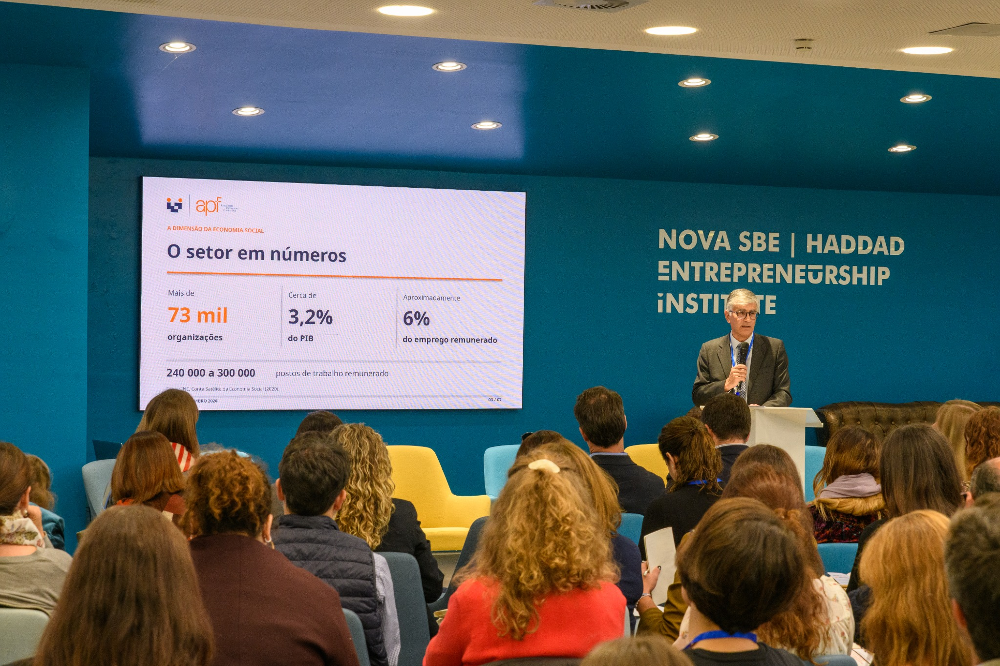
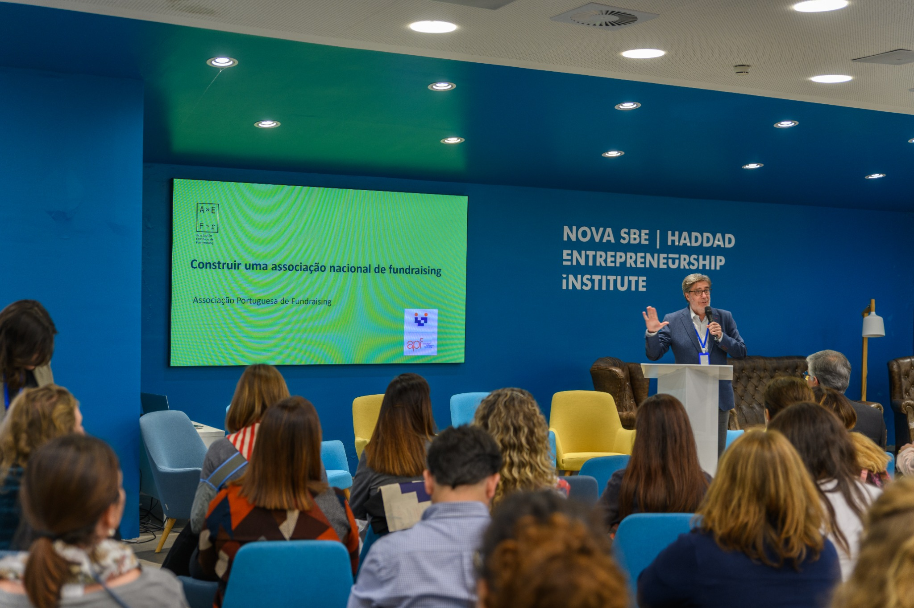
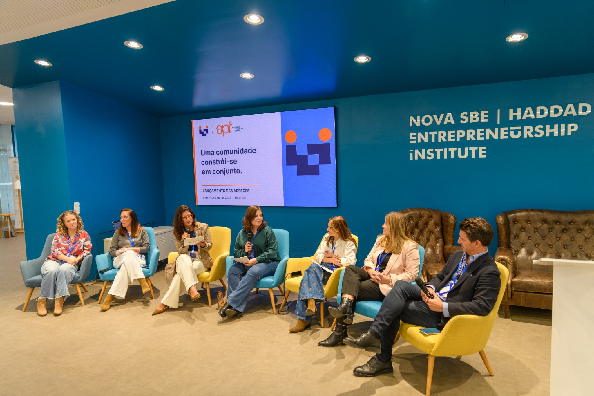
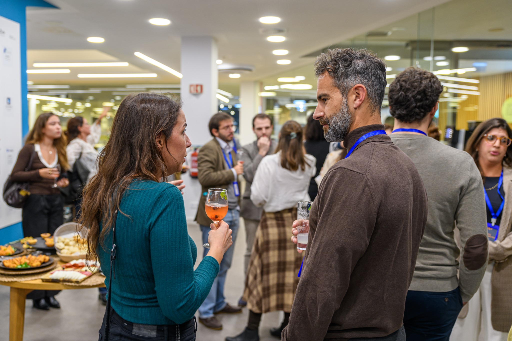

A Associação Portuguesa de Fundraising (APF) celebrou o seu lançamento oficial a 6 de novembro de 2026, no Espaço Haddad da Nova School of Business & Economics (Nova SBE), em Carcavelos. Com 71 participantes e lotação esgotada, o encontro reuniu profissionais de diferentes organizações e setores para refletir sobre o presente e o futuro da angariação de fundos em Portugal.
Mais do que apresentar uma nova associação, o evento abriu espaço ao diálogo, à aprendizagem e à criação de ligações entre pessoas que partilham o compromisso de fortalecer o fundraising enquanto atividade profissional, estratégica e essencial à sustentabilidade das organizações.
Um novo capítulo para o fundraising em Portugal
A sessão começou com a intervenção de Pedro Oliveira, Dean da Nova SBE, instituição anfitriã do encontro. Seguiram-se Rui Silvestre, Presidente da Direção da APF, e Rita Coelho Pinto, Líder Nacional do GivingTuesday Portugal, numa abertura que enquadrou a missão da Associação e a ligação entre a profissionalização da angariação de fundos e a promoção de uma cultura de generosidade.
A APF pretende contribuir para o reconhecimento da profissão, incentivar a formação e a partilha de conhecimento, promover boas práticas éticas e aproximar profissionais e organizações. O lançamento público representou, assim, um passo importante na construção de um espaço comum para quem trabalha na mobilização de recursos para causas de impacto.
Perspetivas europeias e experiências de diferentes setores
A dimensão internacional esteve presente nas intervenções de Larissa Madeleine Probst, CEO da German Fundraising Association e membro da Direção da European Fundraising Association (EFA), e de Fernando Morón Limón, Diretor-Gerente da Asociación Española de Fundraising (AEF).
As duas participações trouxeram ao encontro referências europeias para pensar o desenvolvimento do setor, o papel das associações profissionais e as oportunidades de aprendizagem e colaboração além-fronteiras. A experiência de outros países ajudou a enquadrar os desafios que se colocam à comunidade portuguesa de fundraising.

O painel «O que é ser Fundraiser no meu setor?» mostrou como a angariação de fundos assume diferentes formas consoante a missão e o contexto das organizações. Filipa Morais Santos, da SOS Children's Villages International, trouxe a perspetiva do setor social; Marco Espinheira, da Nova SBE, a do ensino superior; e Cátia Pires da Silva, da Greenpeace Portugal, a da área ambiental. A conversa integrou ainda Carina Bastos, da Fundação de Serralves, no campo da cultura e das artes, e Inês Domingues, do Gulbenkian Institute for Molecular Medicine (GIMM), na área da ciência.
Com moderação de Mariana Mateus, Vogal da Direção da APF, e de Milena Lordelo Issa, das Aldeias de Crianças SOS de Portugal, o painel permitiu cruzar realidades distintas e reconhecer desafios partilhados, desde a construção de relações de confiança até à valorização das competências dos profissionais. A apresentação e condução do evento estiveram a cargo de Ana Farias Fonseca, da Greenpeace Portugal.

Uma comunidade que começa a ganhar forma
As conversas prolongaram-se para além das intervenções, nos momentos de encontro e networking. A diversidade de percursos representados demonstrou o potencial de uma comunidade capaz de aproximar organizações da sociedade civil, instituições de ensino, entidades culturais, projetos científicos, empresas e outros parceiros.
O lançamento assinalou o início de um trabalho coletivo: criar condições para que os profissionais de fundraising possam encontrar pares, trocar experiências e contribuir para práticas cada vez mais qualificadas e sustentáveis.

Um agradecimento a quem tornou este encontro possível
A concretização do evento contou com o apoio da Nova SBE, da Delta Cafés, da SABA Portugal e da Unimagem — Comunicação e Imagem. Os contributos institucionais, logísticos e de comunicação, incluindo apoios prestados pro bono, foram fundamentais para concretizar este encontro.
A APF reconhece também o trabalho criativo e técnico de Joana Sequeira, responsável pelo design gráfico e pela identidade visual e digital da Associação; de Sofia Farinha, pela cobertura fotográfica; de João Farinha, pelo tratamento das imagens; e de Francisco Silvestre, pela captação e produção de vídeo.
Nos bastidores, foram igualmente importantes o acompanhamento logístico de Francisca Ramirez e da equipa da Nova SBE, bem como o contributo de Maria Lucinda Mateus, Ana Rute Medeiros e das restantes pessoas envolvidas na preparação e organização. A todos os oradores, moderadores e participantes, a APF agradece a disponibilidade, a partilha e a confiança neste projeto.
Fotografia: Sofia Farinha | Tratamento de imagem: João Farinha
O futuro constrói-se em conjunto
O lançamento oficial foi um ponto de partida. A APF quer continuar a promover conhecimento, colaboração e reconhecimento profissional, reforçando o papel do fundraising na capacidade das organizações para cumprir as suas missões.
Esta comunidade constrói-se com as pessoas que dela fazem parte. A APF convida profissionais e organizações a conhecerem a Associação, a partilharem experiências e a participarem na construção do futuro do fundraising em Portugal.